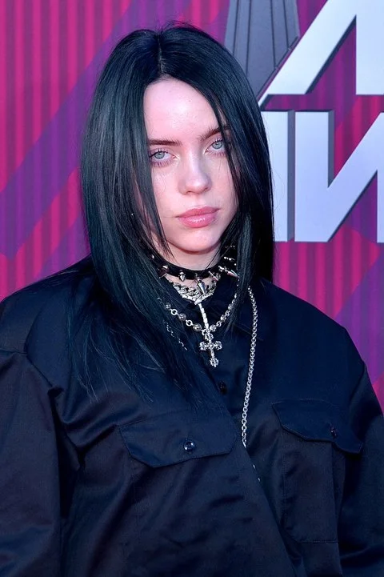

Billie Eilish Pirate Baird O’Connell é uma jovem estrela pop que compõe e canta.
A menina prodígio, com uma promissora carreira internacional, está cada vez mais famosa entre o grande público.
A artista nasceu em Los Angeles (Califórnia) no dia 18 de dezembro de 2001.
Origem
cantora é filha dos atores Maggie Baird e Patrick O'Connell e tem um irmão chamado Finneas O’Connell.
Apesar de fazerem parte da indústria artística, antes de terem reconhecimento o pai de Billie trabalhou na construção civil (para a Mattel) e a mãe foi professora.
Início da carreira
A jovem começou a cantar aos oito anos de idade no Children’s Chorus. Aos 14 anos passou a lançar material original, escrito por ela e produzido e co-escrito pelo irmão Finneas O’Connell.
A música que a divulgou para o mundo foi Ocean Eyes, lançada em 2016.
Seu primeiro álbum lançado, When We All Fall Asleep, Where Do We Go?, em março de 2019, foi eleito um dos melhores discos do ano.
A trilha sonora de 007
Billie Eilish recebeu a encomenda de fazer um single para o novo filme do James Bond (007: Sem tempo para morrer). A jovem compôs, ao lado do irmão, a música No time to die, que ficou no topo das paradas de sucesso.
Billie é até hoje a compositora mais jovem a ter sido escolhida para escrever uma canção tema da saga James Bond.
O instagram oficial da cantora é @billieeilish
Músicas de Billie Eilish
Alguns dos maiores sucessos de Billie são:
Fingers crossed
No time to die
Ocean eyes
Bad guy
Lovery
Everything I wanted
When the party's over
All the good girls go to hell
I love you
Youtube
Desde fevereiro de 2013 Billie mantem um canal no youtube que leva seu nome.
Prêmios Grammy
Billie venceu cinco Grammys, entre eles nas categorias mais importantes do evento (Álbum do Ano, Registro do Ano, Canção do Ana, Melhor Novo Artista).
A artista venceu também o Brit Awards.
Participação no Oscar
Durante a 92ª cerimônia de entrega dos Óscares, Billie se apresentou cantando o clássico Yesterday, dos Beatles.
